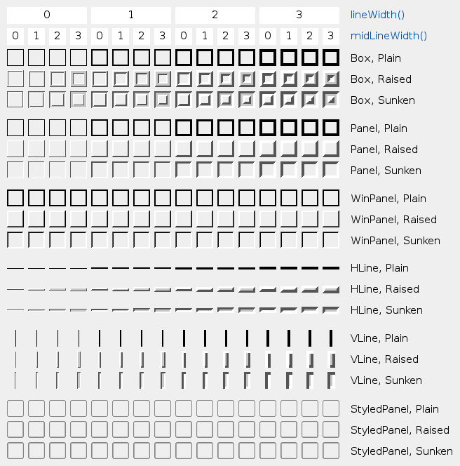

| Home · All Classes · Modules · QSS HELP · QSS 案例 · VER007 HOME |
该QFrame类是基类的小部件，可以有一个框架。More...
继承QWidget。
通过继承QAbstractScrollArea，QLabel，QLCDNumber，QSplitter，QStackedWidget和QToolBox。
该QFrame类是基类的小部件，可以有一个框架。
QMenu使用它来“养”周围的屏幕上方的菜单。QProgressBar有一个“沉没”的样子。QLabel具有平坦的外观。像这样的小部件的帧可以被改变。
QLabel label(...); label.setFrameStyle(QFrame.Panel | QFrame.Raised); label.setLineWidth(2); QProgressBar pbar(...); label.setFrameStyle(QFrame.NoFrame);
该QFrame类也可以直接使用，无需任何内容创建简单的佔位符框架。
边框样式是由一个指定的frame shape和shadow style是，用于在视觉上的帧从周围的部件中分离出来。这些属性可以设置一起使用setFrameStyle（）函数和读取frameStyle（ ） 。
该框架形状NoFrame，Box，Panel，StyledPanel，HLine和VLine;阴影样式Plain，Raised和Sunken。
一帧小部件都有描述边框的厚度三个属性：lineWidth，midLineWidth和frameWidth。
该帧的帧和内容之间的边缘可以与被定制QWidget.setContentsMargins（）函数。
该表显示了一些款式和线宽的组合：

该枚举类型定义了用于给一个3D效果的帧阴影的类型。
| Constant | Value | Description |
|---|---|---|
| QFrame.Plain | 0x0010 | 框架和内容，出现与周围环境水平;绘制使用的调色板QPalette.WindowText颜色（无任何3D效果） |
| QFrame.Raised | 0x0020 | 框架和内容出现上调;使用当前颜色组的光与暗的颜色绘制3D凸起线 |
| QFrame.Sunken | 0x0030 | 框架和内容出现凹陷，使用当前颜色组的光与暗的颜色绘制一个三维线沉没 |
阴影交互QFrame.Shape时，lineWidth（ ）和midLineWidth（ ） 。看到在主类文件的帧的图片。
See also QFrame.Shape，lineWidth（）和midLineWidth（ ） 。
这个枚举类型定义框架提供的形状。
| Constant | Value | Description |
|---|---|---|
| QFrame.NoFrame | 0 | QFrame借鉴什么 |
| QFrame.Box | 0x0001 | QFrame周围绘制其内容的盒子 |
| QFrame.Panel | 0x0002 | QFrame绘制一个面板，使内容出现凸起或凹陷 |
| QFrame.StyledPanel | 0x0006 | 绘制一个矩形面板，一看就是取决于当前图形用户界面风格。它可以凸起或凹陷。 |
| QFrame.HLine | 0x0004 | QFrame绘制一条水平线，没有帧（作为分隔符有用） |
| QFrame.VLine | 0x0005 | QFrame绘制了框架没有一条垂直线（如分离器很有用） |
| QFrame.WinPanel | 0x0003 | 绘制一个矩形面板可以凸起或凹陷的像那些在Windows 2000。指定此形状设置线宽为2像素。 WinPanel提供了一种用于兼容性。对于GUI风格的独立性，我们建议使用StyledPanel代替。 |
当它不叫QStyle，外形与互动QFrame.Shadow时，lineWidth（ ）和midLineWidth（ ）创建的总成绩。看到在主类文件的帧的图片。
See also QFrame.Shadow，QFrame.style（）和QStyle.drawPrimitive（ ） 。
该枚举定义了可以用来提取的两个组成部分的两个常数frameStyle（）：
| Constant | Value | Description |
|---|---|---|
| QFrame.Shadow_Mask | 0x00f0 | 该Shadow的一部分frameStyle（ ） |
| QFrame.Shape_Mask | 0x000f | 该Shape的一部分frameStyle（ ） |
通常情况下，你并不需要使用这些，因为frameShadow（）和frameShape（ ）已提取Shadow和Shape部分frameStyle（ ） 。
See also frameStyle（）和setFrameStyle（ ） 。
该parent的说法，如果不是没有，原因self通过Qt的，而不是PyQt的拥有。
构造一个框架部件与框架样式NoFrame和一个1像素边框宽度。
该parent和f参数被传递到QWidget构造函数。
从重新实现QWidget.changeEvent（ ） 。
从重新实现QObject.event（ ） 。
返回框架风格。
缺省值是QFrame.Plain。
See also setFrameStyle（ ）frameShape（）和frameShadow（ ） 。
从重新实现QWidget.paintEvent（ ） 。
设置框架样式style。
该style是按位或一个框的形状和框架阴影样式之间。看到在主类文件的帧的图片。
在框架形状在给定的QFrame.Shape并且在阴影样式QFrame.Shadow。
如果一个中等宽度小于指定0越大，附加线的绘制Raised or Sunken Box，HLine和VLine帧。当前颜色组的中间色用于绘制中间线。
See also frameStyle（ ） 。
从重新实现QWidget.sizeHint（ ） 。
| PyQt 4.10.3 for X11 | Copyright © Riverbank Computing Ltd and Nokia 2012 | Qt 4.8.5 |